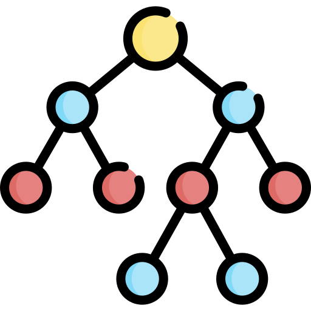

Feza Boys Secondary School opened in 1998 as a secondary school from Form I to Form IV and started high school in 2005, and it is accredited by The Ministry of Education and Vocational Training of Tanzania. The school conducts competitive admission process. Feza Boys High School is a comprehensive 2 years A-level education with 5 different core-subject combinations, Physics, Chemistry and Mathematics (PCM), Physics, Chemistry and Biology (PCB), Economics, Geography and Mathematics (EGM), History, Geography and Economics (HGE) and History, Geography and Literature (HGL). Spanning 14 acres, in Kinondoni Municipal, Tegeta district, in the commercial city of Dar es Salaam, the School serves the education needs of students all over The United Republic of Tanzania. The school’s staff is mainly Tanzanian with a number of foreign volunteering teachers from different countries around the world. The student body is at large Tanzanian with a minority of white and Asian origin students.
FEZA, which is standing with a motto Be Better Educated, believes that a good nation will stand strong if her people are embodied with good education. A person with better education will be a source of light illuminating the nation. FEZA aims to light every door of the house with the light of education by giving scholarships to the needy one whether in Feza Schools or Community schools to support the slogan of our Father of nation who said that our big enemies are ignorance, diseases and poverty (adui ujinga, maradhi na umasikini). Ignorance is a prime factor of the other two enemies, diseases and poverty. FEZA schools logo consists of two features, a black bow bending downward which looks like a foetusin a womb of its mother. This is the stage where all human being has to pass in the process of foetus development, the dark bowed feature represents a human being. So, FEZA logo expresses that human being needs better education in order to grow and serve our beautiful nation, Tanzania. Be Better Educated.

Our Mission
Our mission is to provide you with the knowledge and skills you need.to be ableto craft the kinds of stories that you want to tell

Our Values
To give everyone the ability tobe heard, seen and share their thoughts and experiances as they happen!